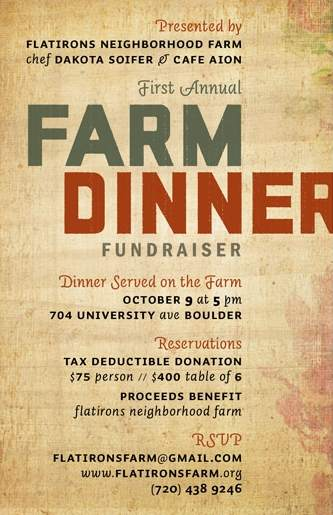
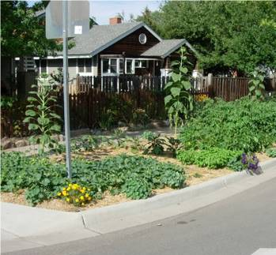

Flatirons Neighborhood Farm would like to invite you to our First Annual Farm Dinner on October 9th. Come support the farm and enjoy an elegant four-course dinner featuring the fresh produce of Flatirons Neighborhood Farm prepared by Dakota Soifer, the head chef of Café Aion. Event details are included in the invitation. Please RSVP by emailing flatironsfarm@gmail.com or calling the farm manager, Scott Hoffenberg, at 720-438-9246. We are collecting all payments before the event. Please make your check out to Flatirons Neighborhood Farm and either hand deliver or mail it to 709 University Ave. Boulder, CO. 80302. Your reservation will be confirmed upon us receiving your check.
An Introduction to our Project

Today, 58 million Americans spend approximately $30 billion every year to maintain over 23 million acres of lawn. That's an average of over a third of an acre and $517 each. The same size plot of land could still have a small lawn for recreation, plus produce all of the vegetables needed to feed a family of six. The lawns in the United States consume around 270 billion gallons of water a week--enough to water 81 million acres of organic vegetables, all summer long. (Heather Flores, Food Not Lawns)
Flatirons Neighborhood Farm is a non-profit urban farm that was built by a community of farmers, gardeners, and activists in Boulder's Flatirons Neighborhood. We run a ten member CSA using homeowners' yards in our neighborhood to organically cultivate vegetables, flowers, and herbs.
The Farm seeks to be visually and practically instructive as a model of sustainable agriculture within our urban community, and aims to build community around a greater knowledge of healthy homegrown food.
Our produce will be distributed to local CSA shareholders, sold to local restaurants, and donated to local organizations working with families in need.
Benefits to our Community
- Fresh homegrown food
- Community-building
- Increased property value
- A reduced carbon footprint
- A forum for skill-sharing and community education